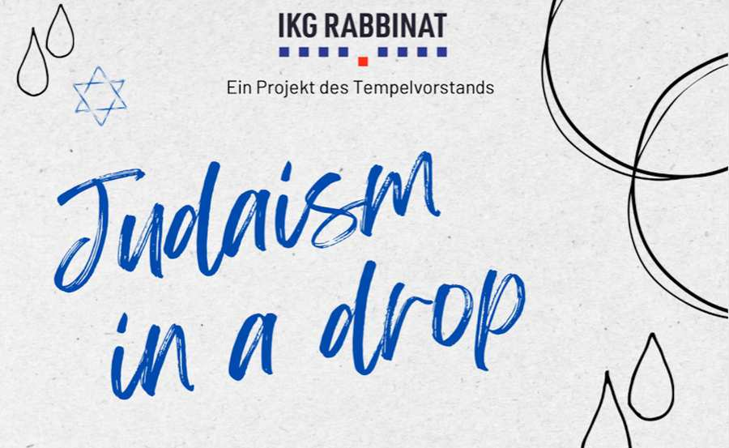

Judaism in a Drop
Der Tempelvorstand des Wiener Stadttempels lädt herzlich zu einem Glas Wein und gemeinsamen Lernen.
Das Projekt „Judaism in a Drop“ soll auch eine Zeit sein, um andere interessierte Gemeindemitglieder neu und besser kennenzulernen.
Nächsten Termine:
Samstag, 17. Oktober 2026 um 19:00 Uhr: „Menschlichkeit & Demokratie - Neuanfang & Zusammenhalt"
Samstag, 12. Dezember 2026: "Menschlichkeit & Demokratie - from darkness to light, Chanukka sameach!"
Ablauf:
- (Im Winter) Gemeinsame Hawdalah mit Oberkantor Shmuel Barzilai und Begrüßung durch Oberrabbiner Jaron Engelmayer
- Workshop mit tiefen Einblicken in jüdische Weltanschauung und Feste des Jahreszyklus, aber auch zu aktuellen Themen zu Demokratie und Menschlichkeit aus jüdischem Blickwinkel durch Gastvortragende im Gespräch mit Judith Rabfogel-Scheer, dem Team von Judaism in a Drop und Teilnehmer:innen
- Drop: moderierter Wine & Talk zu aktuellen Themen meist im Kontext von Demokratie und Menschlichkeit aus jüdischem Blickwinkel mit Gastvortragenden
- Vernetzung bei einem Tropfen (Drop) Wein oder Traubensaft und leichten Snacks
- Kinderprogramm findet, bei Anmeldung von mindestens 5 Kindern bis Mittwoch vorm Event, parallel statt
Wir freuen uns auf Euer Kommen!
Mag.a Judith Rabfogel-Scheer, Dr. Noah Scheer, Lisa Prutscher